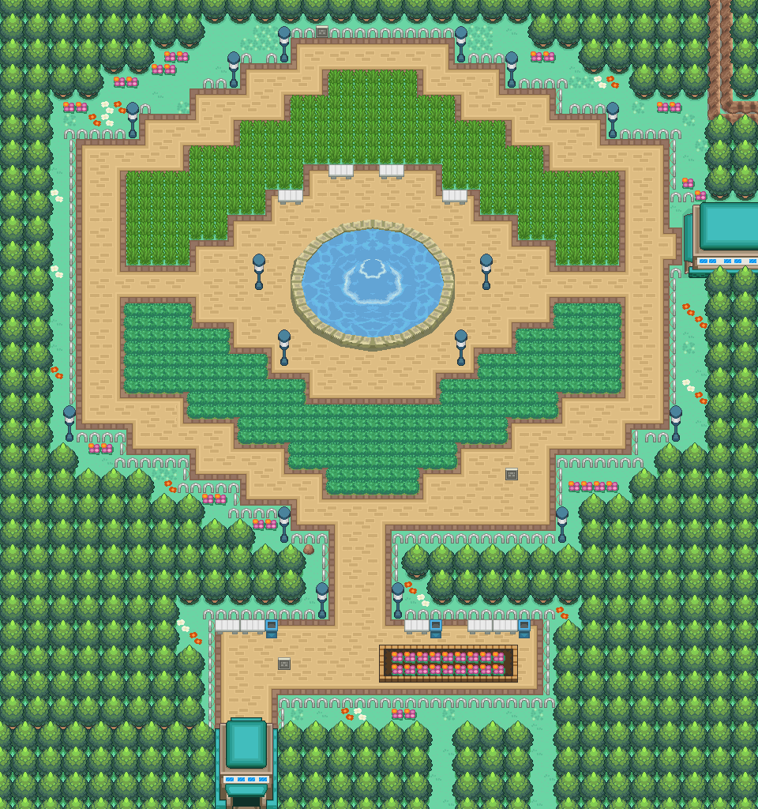

花叶蒂（全国图鉴 No.0670）

怎样获得
进化获得
- ← 花蓓蓓 ｜ 达到 Lv.19
野生遭遇
- 自然公园 ｜ 黄昏 17:00–18:59 ｜ 地面·草丛/洞窟 ｜ Lv.12–15 ｜ 选槽权重 10 ｜ 遇敌率表值 15
- 地图条目：自然公园 1:124
- 自然公园 ｜ 夜晚 19:00–04:59 ｜ 地面·草丛/洞窟 ｜ Lv.12–15 ｜ 选槽权重 10 ｜ 遇敌率表值 15
- 地图条目：自然公园 1:124
进化
本槽的进化去向
进化前来源
- ← 花蓓蓓 ｜ 达到 Lv.19
数据来源
- 内部槽：0778
- 属性：妖精 ｜ 种族值合计 371
- 种族值：HP 54 ｜ 攻击 45 ｜ 防御 47 ｜ 特攻 75 ｜ 特防 98 ｜ 速度 52
- 捕获率字段：120（表值；实际捕获还受精灵球/状态/等级影响）
- 蛋群：妖精 / 妖精 ｜ 成长曲线：MEDIUM_FAST
- 基础数据：
wiki_export/core/data/species.json - 全国图鉴映射：
wiki_export/core/data/national_dex.json - 进化数据：
wiki_export/core/data/evolutions.json - 获取数据：
wiki_export/world/data/acquisition_by_species.json（species_id 778） - 遭遇表：
wiki_export/world/data/encounters.json - 地图：
wiki_export/world/data/maps.json - 进化方式符号：
wiki_export/enrichment/reference_only/evolution_methods.json（参考表） - 道具/招式名称：
wiki_export/core/data/items.json、wiki_export/core/data/moves.json - 证据状态：静态遭遇表证据；未证明实际可达性
地点地图
共享RGB底图；点击可缩放定位。数字对应本页相关地点，不代表地图上全部事件。
自然公园

地图范围记录：当前资料没有精确人物／遭遇坐标。